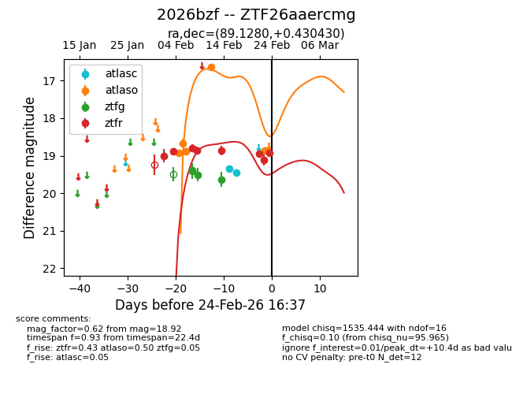
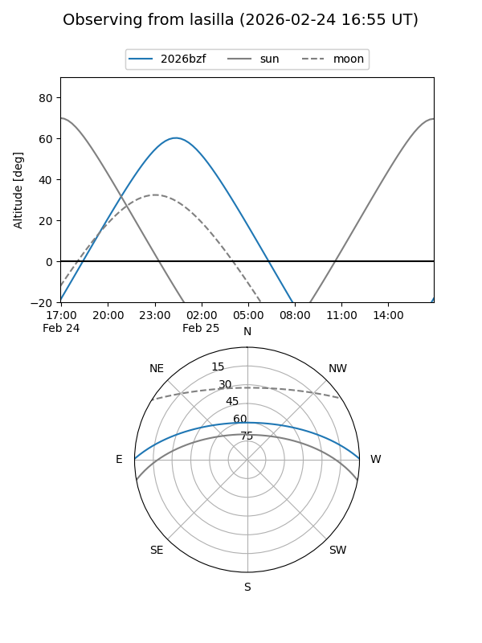
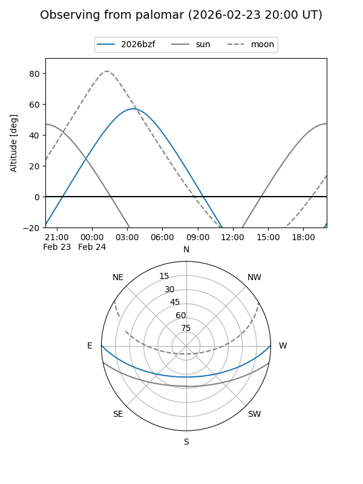
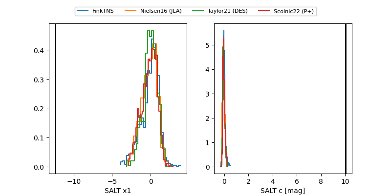

2026bzf
Target 2026bzf at 2026-02-24 16:38
Aliases and brokers:
FINK: link
Lasair: link
ALeRCE: link
TNS: link
YSE: link
alt names
ZTF26aaercmg (ztf,fink_ztf)
2026bzf (tns,yse)
Coordinates:
equatorial (ra, dec) = 89.1280,+0.43043
equatorial (HMS+DMS) = 05:56:30.71,+00:25:49.55
galactic (l, b) = (206.1849,-11.99505)
Flags:
Photometry:
last atlasc=19.46, atlaso=18.87, ztfg=19.64, ztfr=18.92
2 atlasc, 5 atlaso, 3 ztfg, 8 ztfr detections
Lightcurve

Visibility


Additional plots
